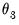
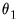
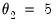
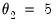

To perform MIDAS estimation in EViews, open the equation dialog by selecting , or by selecting and then selecting from the dropdown menu to bring up the MIDAS estimation dialog:
The tab is used to specify the variables of and form of the MIDAS equation and to set the estimation sample.
The edit field is used to specify the low frequency dependent variable followed by a list of low frequency regressors from the same page as the dependent variable. The low frequency regressors should include any desired lags of the dependent variable. Note that explicit ARMA terms are not permitted in this estimation method.
The edit field is used to specify the higher-frequency regressors. The syntax for these variable is
pagename\seriesname where
pagename is the name of the page containing the series, and
seriesname is the name of the series. Note also that series expressions are allowed,
e.g. “mypage\log(x)”.
Just below the edit field are radio buttons that control the number of lags. You may provide a fixed number of lags by selecting the appropriate radio button and entering a value, or you can elect to determine the number of lags using minimal sum-of-squared residuals as the selection criterion. If you select the latter radio button, you will prompted to enter a value for the maximum number of lags. Note that automatic selection is only available for the Almon and Step weighting methods.
The tab of the dialog lets you specify some the MIDAS weighting function along with other estimation options:
The dropdown menu controls specification of the MIDAS weighting. By default the weighting method is selected, but , , or may also be chosen:
The button produces a secondary dialog that allows you to change the way the different frequencies of the variables are matched. By default, EViews uses the last observation in the higher frequency periods as the 0th lag in the regression. You can change this to instruct EViews to use the first observation, or to use arbitrary date series from each page to perform the date matching.
Since the and weighting methods involve non-linear estimation, selecting either of these methods will enable the andmethod options:
The e section offers standard EViews covariance settings for nonlinear regression (
“Coefficient Covariance”).
The dropdown menu offers standard EViews optimization settings for nonlinear regression (
“Optimization”), with the exception of the default . This method is a combination of the and methods, where OPG is used for an initial 50 iterations, then BFGS is used until convergence. We have found that the hybrid method often reaches convergence more successfully than OPG or BFGS alone.
If you select in the dropdown, EViews will display an Auto/GETS button.
The edit field allows you to specify the number of blocks into which the search regressors will be split. Typically, if the number of search regressors is less than the number of observations in estimation, only a single block is required. However, if the number of search regressors exceeds the number of observations, they will be split into blocks. EViews will automatically determine the optimal number of blocks, but you may enter your own choice in this field to override the EViews default.
The and radio buttons determine whether the search regressors are split into blocks in chronological order (the first group of lags/indicators in the first block, followed by the next group in the second block and so on), or alternating (the first variable in the first block, second variable in the second block and so on).


, the endpoint parameter , or both  and
. You may also specify covariance and optimization settings (“Coefficient Covariance and Optimization”).
 , the number of high frequency lags to be included in the low frequency regression equation.
, the number of high frequency lags to be included in the low frequency regression equation. , the degree of the Almon polynomial.
, the degree of the Almon polynomial.  .
.  , , and
, , and  , then runs OLS to obtain the remaining values. Then, if not performing shape restricted estimation, EViews updates the starting values by estimating a shape restricted beta weight model.
, then runs OLS to obtain the remaining values. Then, if not performing shape restricted estimation, EViews updates the starting values by estimating a shape restricted beta weight model.